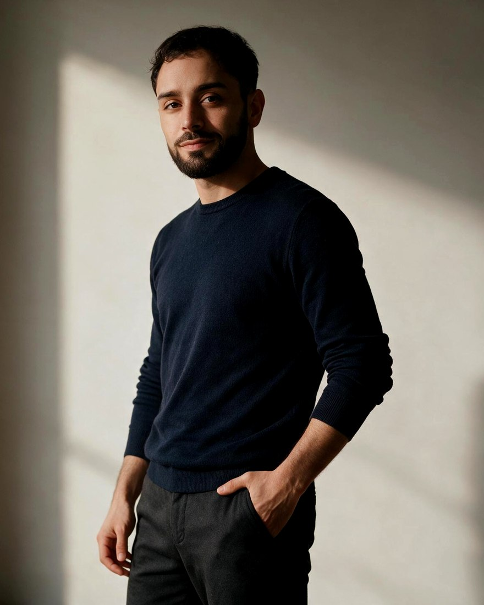
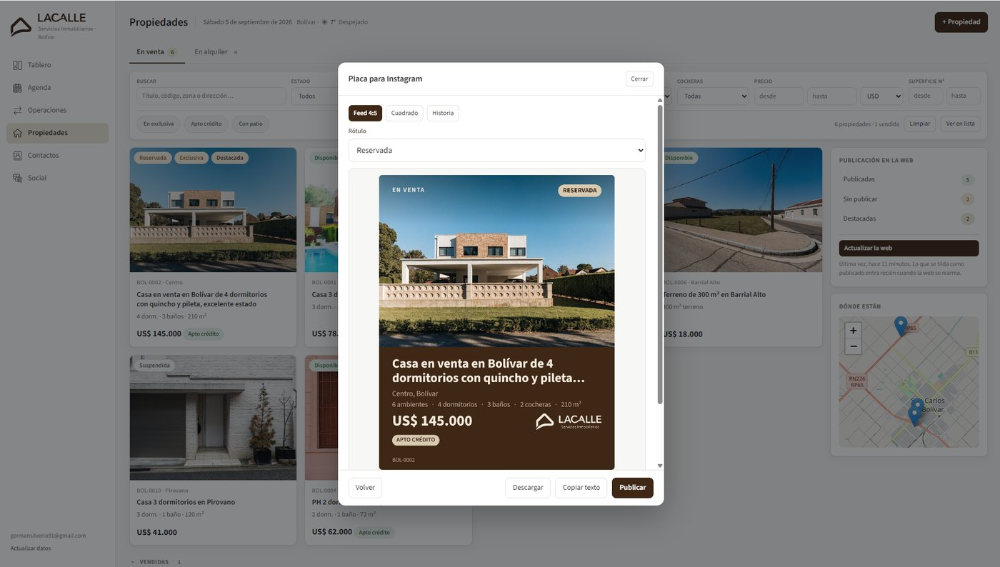
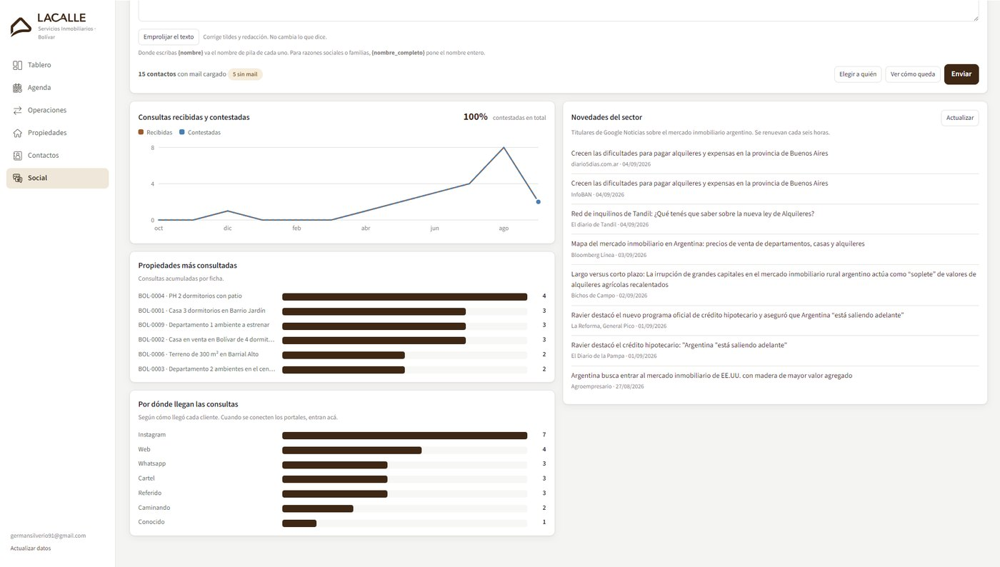
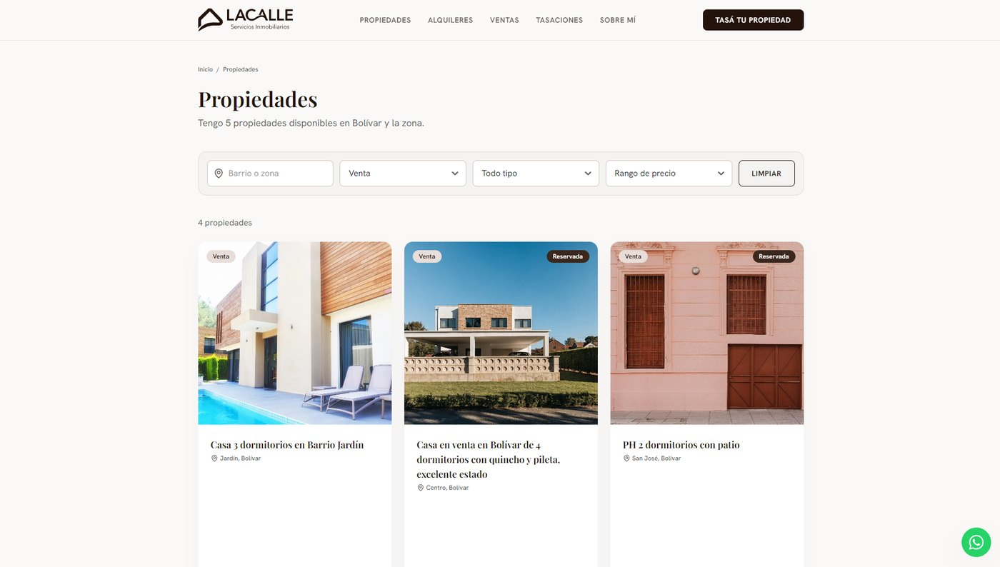
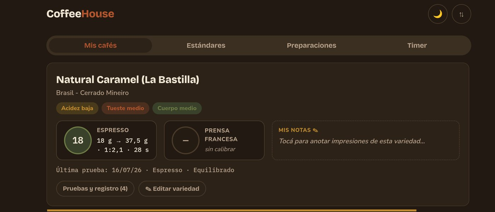
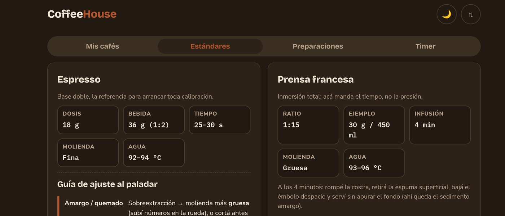
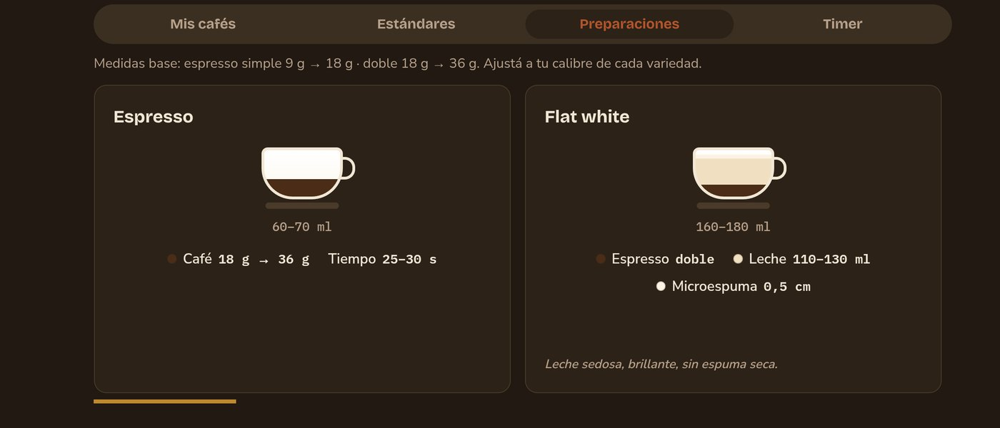
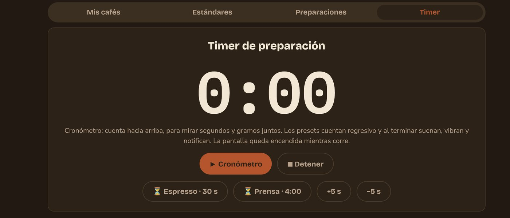
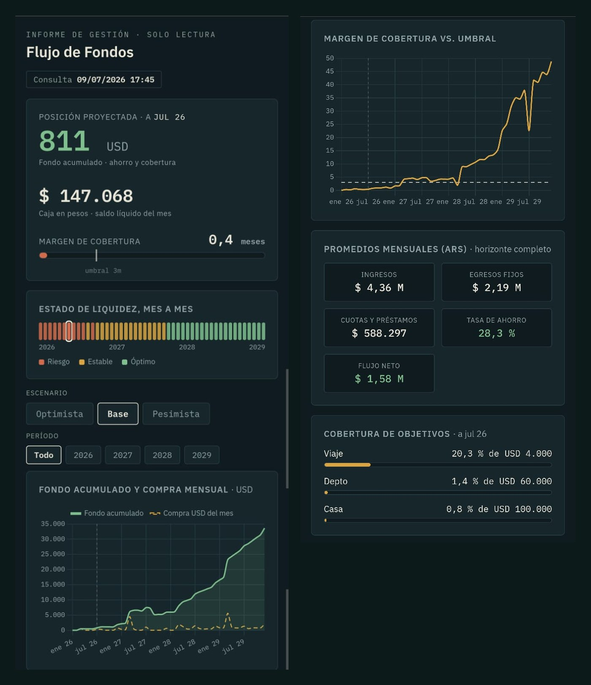

Germán Silverio.
Construyo las herramientas con las que trabajo. Quince años de cierres, activos fijos y SAP en multinacionales de energía — y software propio que corre todos los días.

Cosas que existen y se usan
Software salido del trabajo diario: lo que hacía falta, sin capas de más.
CRM Lacalle Servicios Inmobiliarios
Sistema de gestión completo para una martillera que se lanzó por su cuenta. Del cero a producción, con el sitio web, en menos de diez días.
- · Contactos, propiedades, pipeline, agenda, métricas, fotos y mails con firma.
- · Redacción de avisos asistida por IA (Gemini).
- · Descarté Postgres: cero cuentas nuevas para ella, respaldo por historial de Drive.
- · 4 suites de tests, releases fechadas con vuelta atrás, dos manuales.
- · Placas para Instagram desde la ficha, difusión por mail y calendario de fechas para postear.
- · Consultas por propiedad y por canal de origen: se ve qué acción de publicidad trae clientes.






Sitio web conectado al CRM
Ella tilda “publicar”, aprieta un botón y el sitio se reconstruye solo.




- · Un Apps Script aparte expone por JSON solo lo publicable: el CRM nunca sale a internet.
- · Saqué el CDN de Tailwind: 300 KB de JS bloqueante → 27 KB de CSS.
- · Iconos por sprite SVG de 13 KB, sin pedidos de red.
- · Buscador, filtros y formulario de tasación: eran decorativos, hoy funcionan.
CoffeeHouse
Bitácora de calibración de espresso en un teléfono montado en la barra. El proyecto que me enseñó a iterar: cuatro versiones salidas del uso, no del plan.





- · Modo kiosk: offline, wake lock, timer que sobrevive la suspensión.
- · Calibre guardado por variedad y método, ratios automáticos.
- · Recetario de doce preparaciones y estándares técnicos.
Flujo de Fondos
Modelo de proyección a 2029 con tres escenarios, más un tablero web de solo lectura.



- · El Sheet es la única fuente de verdad; el tablero solo lee.
- · Escenarios recalculados al cargar, sin tocar el archivo.
- · Margen de cobertura contra umbral y cartera en dólares.
Smart Finance
PWA de gastos local-first: los datos nunca salen del dispositivo.


- · Escaneo de tickets por visión artificial (Gemini).
- · Asesor conversacional sobre el historial local.
- · Presupuestos y proyección con interés compuesto.
Agente de cierres contables
Dentro de mi trabajo: día a día trabajo con Copilot sobre las tareas reales de cierre, documento pasos y reglas mientras las hago, y de ahí van saliendo automatizaciones nuevas.
- · Mejora continua con IA: cada tarea que repito se vuelve procedimiento escrito y candidata a automatizar.
- · Del ida y vuelta con el modelo aparecen soluciones que no estaban en el plan.
- · El horizonte es un agente que ejecute el cierre punta a punta.
Entender, construir, sostener
Entiendo el proceso
Quince años adentro de cierres y control de gestión. Sé dónde se pierde el tiempo y qué dato no cierra. Automatizar sin eso es acelerar un error.
Construyo la herramienta
Escribo la especificación, dirijo el desarrollo con IA y decido la arquitectura. El código lo escribe el modelo; las decisiones las tomo yo.
La sostengo
Entrego, miro cómo se usa de verdad y vuelvo a tocarla. Tests, versionado y manuales para que no dependa de mí.
Quince años en finanzas corporativas
Analista Semisenior, R2R · AES
ActualCierre mensual integral de las entidades de AES Colombia.
Analista de Activos Fijos · AES
−50% tiempo auditoríaPapel de trabajo para verificar el RECPAM sobre bienes de uso: −50% en tiempo y en consultas de auditoría. Notas bajo IFRS, USGAAP y GAAP local.
Analista de Planeamiento y Control · Edelap
OPEX, desvíos y presupuesto de gastos; obras de capital y créditos con el Estado.
Analista Contable · Edelap
Lideré Activos Fijos en la migración a SAP. Con Accenture, automatizamos el ajuste por inflación de bienes de uso dentro del sistema.
Analista Contable · FABA
Veinte conciliaciones de alto volumen por día sobre las cobranzas de ~200 obras sociales.
Matriz de dominio técnico
¿Tenés un proceso manual que nadie se animó a tocar?
Eso es exactamente lo que me gusta hacer. Escribime y lo miramos.